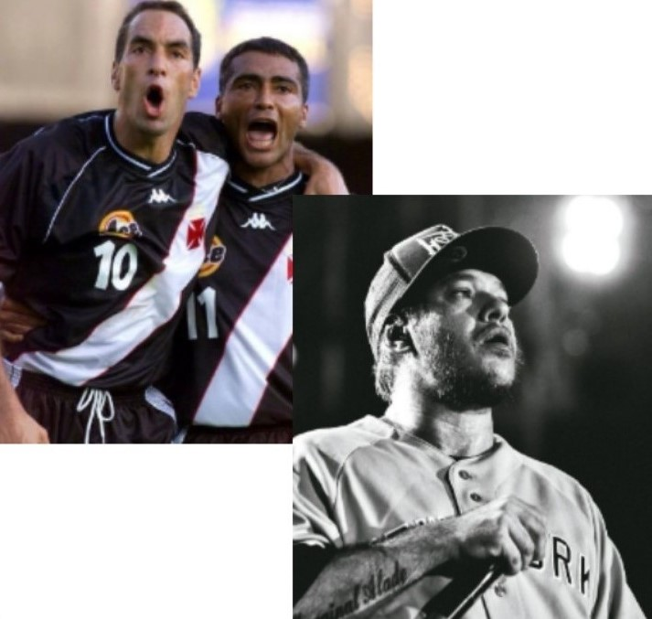

Minha história começa em Vila Velha no Espírito Santo, lugar onde eu
nasci, cresci e moro até hoje. Fiz toda minha vida escolar na escola
COC(hoje SEB), sempre fui um aluno ideal dentro da instituição,
participei de diversos eventos dentro da escola, como as feiras de
ciências saral literário e apresentações de teatro, guardo ótimas
recordações de lá. Depois do 3° ano eu entrei na UFES pelo enem, no
curso de engenharia mecânica, cursei até o 3° semestre, porém não me
adaptei bem à Universidade e ao curso, por isso resolvi mudar para a UVV
e cursar Ciências da Computação. Fiz isso com o objetivo de me
profissionalizar dentro de uma área próspera, com bons salários e muito
terreno pra explorar e se desenvolver, além de muitas oportunidades de
emprego. Sempre gostei de computadores e do desenvolvimento pessoal
independente, e dentro desse ramo eu vejo grandes oportunidades para
poder completar meus objetivos. No futuro desejo trabalhar como
free-lancer independente nas horas vagas e ser contratado por uma
empresa.
Matérias do curso
Minhas habilidades
construção de software para web
desenvolvimento de banco de dados
desing de games
estrutura de computadores
experiência e interface com o usuário
gestão de pessoas
fundamentos de tecnologia da computação
Eu domino o pacote home office(world, powerpoint e excel), tenho nível
avançado em inglês, conheço as linguagens HTML, CSS, javascript e
python. Sempre fui um líder nato, além de ter muita facilidade para
conversar e interagir com as pessoas. Também sou bom com números e gosto
bastante de estudar geopolítica, ciência e história.
Meus gostos

Sou torcedor fanático do Vasco, e gosto de futebol no geral, seja
assistindo ou jogando. Tenho vários hobbys, gosto de jogar no
computador, ver um bom filme(sou muito fã dos vingadores), ler um livro,
etc. A música está presente diariamente na minha vida, eu sou bem
eclético, mas tenho um apreço especial por Charlie Brown Jr.